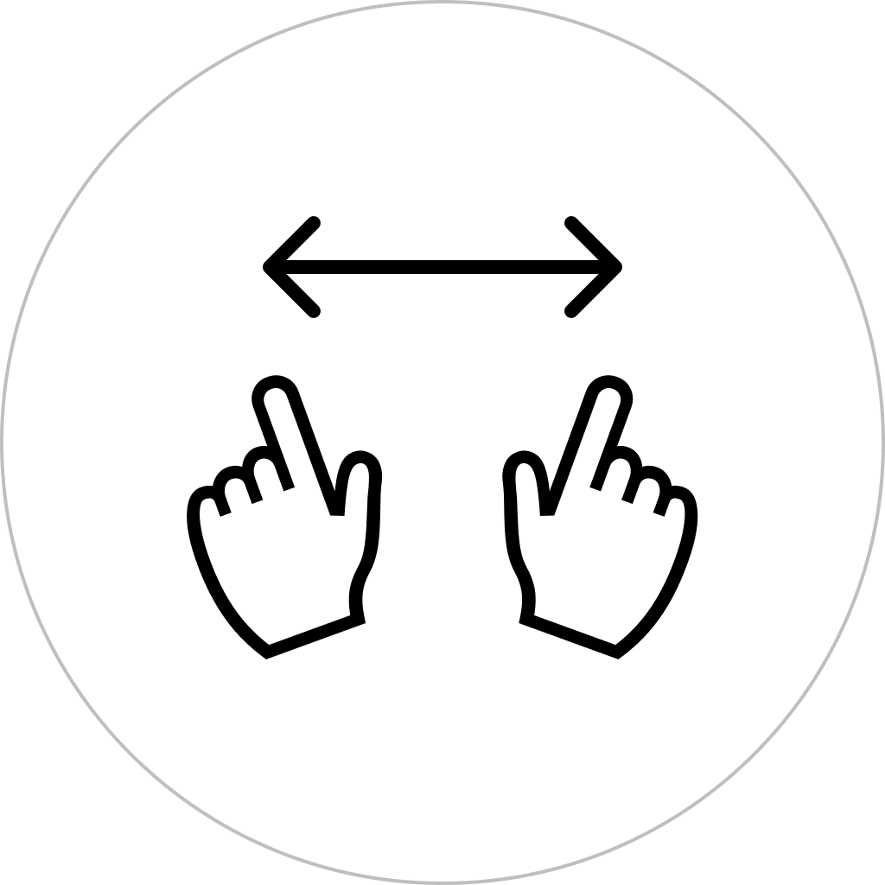
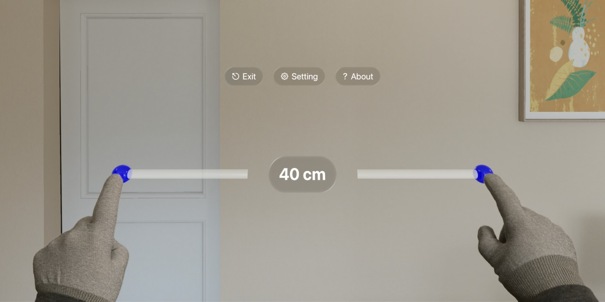
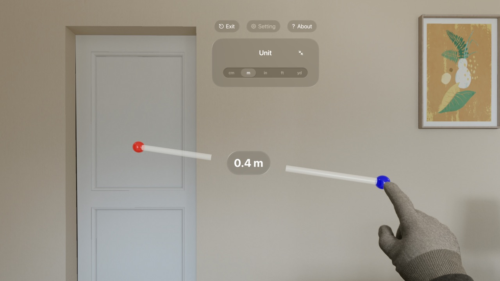
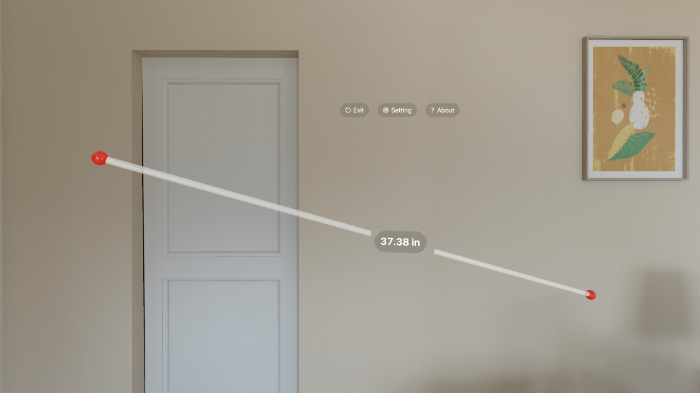

Aplicação intuitiva de medição de distâncias com duas mãos.
Para Apple Vision Pro.



Mede distâncias de forma intuitiva com ambas as mãos!
Apresenta a distância entre as pontas dos dedos indicadores de ambas as mãos.
Opções de unidades.
Centímetros (cm)
Metros (m)
Polegadas (in)
Pés (ft)
Jarda (yd)
Funções extra
Toque indireto no ponteiro para fixar a posição.


Gratuito
https://apps.apple.com/app/id6475769879